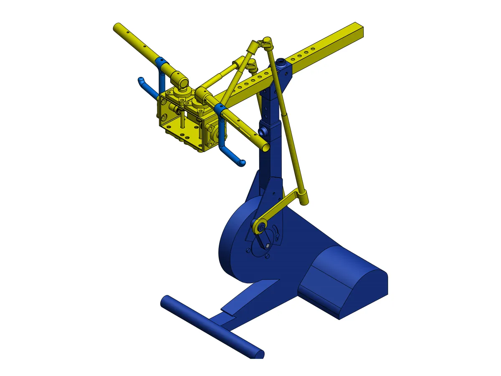
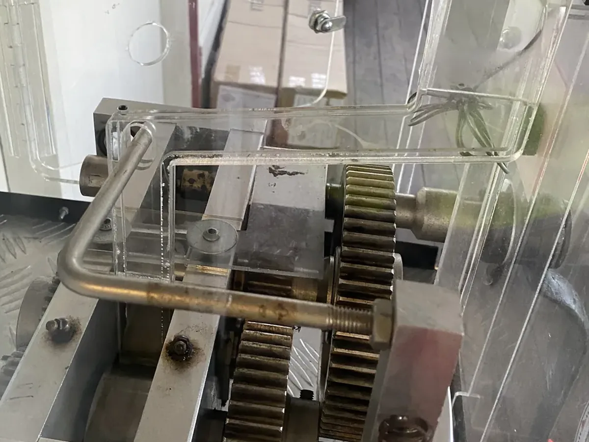
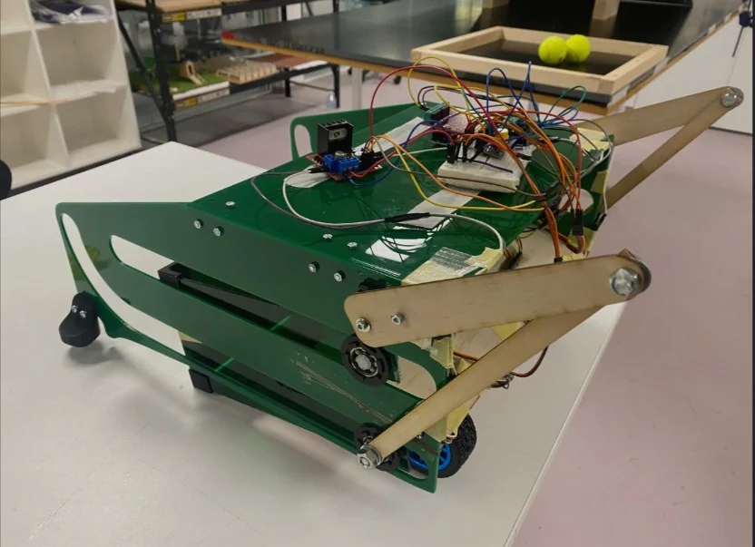

Selected engineering work
Work
Four case studies: a research internship, contract field engineering, a team design and build project, and an experimental controls project of my own. Software coursework and every role are listed below them.
Internship · Nov 2025 to Mar 2026
RT300 upper-limb retrofit
At ACPHT’s BioSpine lab I modelled an arm-cycling retrofit for the RT300SL rehabilitation ergometer and worked out which geometries give a useful handle motion, and which users can reach them.
- 8configurations, one change at a time
- 3user sizes screened for reach
- T2the only configuration in reach for the small user

Contract · Aug 2024 to Jul 2026
Penny press field engineering
As a contractor for NoSense Entertainment I surveyed, installed and repaired penny press and medallion machines at tourism venues, drew replacement parts in SolidWorks, and wrote a troubleshooting guide.
- 6tourism venues in South East Queensland
- 3field cases written up, from new sign letters to a site survey
- 5machine components with a section in the guide

Team project · Griffith University
Warman design and build
A team-based engineering project involving concept development, design, prototyping, testing, and iterative improvement for a competition-based design challenge.
Read the case study
Personal project · Experimental
Spacecraft attitude control
A MATLAB simulation I built of a small spacecraft with torque-limited reaction wheels, PID and LQR pointing, and a safe mode that takes over when it tumbles, verified against written requirements.
- 100%of Monte Carlo trials detumbled within 60 s
- 13.22°/sworst Monte Carlo rate, against a 15°/s limit
- 3modes, with hysteresis so they do not flap
Coursework
University assignments. The Isabelle prover started from starter code supplied by the course; the other two were built from the brief.
- LLM-assisted Isabelle/HOL prover 3806ICT Logic and Automated ReasoningT1 2026Extended the course’s starter prover in Python: routing to local and hosted models through LiteLLM, a cleanup pass that tries to fill leftover
sorryplaceholders in the planner’s proofs, and fixes to run it on Windows with Isabelle2025. Isabelle checks every proof. In my benchmarks a local 7B Qwen model proved 75 of 100 hard goals with Sledgehammer on, up from 49 without it. Code on GitHub - First-order logic sequent prover 3806ICT Logic and Automated ReasoningT1 2026A formula parser, a baseline backward proof search and an improved search that cuts loops and repeated sequents, in Python. On three hard formulas the baseline ran to Python’s recursion limit after about 1,000 nodes. The improved prover ended the search within 9 nodes instead, though it did not find a proof for any of the three either. Code on GitHub
- Electricity tariff comparison tool 2810ICT Software ProjectsT2 2025Group project: a Python web app, built with Flask, that analyses electricity tariffs and compares them.
Roles
- Construction cadet BinahJul 2026 to nowProgramme in MS Project, ITP registers and trade schedules on a residential build
- NDIS support worker Illuminate LifeJul 2026 to nowSupport work alongside the cadetship and study
- Mechanical engineering intern BioSpine LabNov 2025 to Mar 2026RT300 kinematic analysis, thesis and A1 poster
- Parcel sorter Australia PostSep 2025 to Feb 2026Casual work during study
- Design and service contractor NoSense EntertainmentAug 2024 to Jul 2026Penny press and medallion machines at tourism venues
- AV technician Community organisationJan 2017 to Jan 2025Live sound, cameras and streaming for weekly events and conferences
Nothing matches that. Try a tool like SolidWorks or MATLAB, or clear the search.
Also
Work history
Roles, dates and what each one involved, including the current cadetship and support work.
See the experience timelineSummary
Two-page summary
Education, strengths and the two strongest case studies on two A4 pages.
Download the PDF